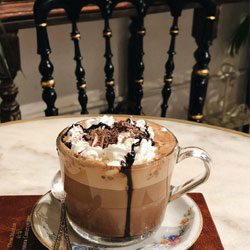

Mocca Café. Una bebida que convina el sabor intenso del espresso y la cremosidad de la leche vaporizada.Flat White. Una bebida caliente a base de dos cafés y leche emulsionada, con la que sorprenderás.Café Vienés. Es una bebida que usa en vez de leche y azúcar, nata montada. Affogato. combina dos de los elementos más famosos de la gastronomía italiana: el café espresso y el helado. Frappé. Es una bebida de café fría con espuma de leche. Macchiato. Consiste en un expreso con una pequeña cantidad de leche caliente y espumada.